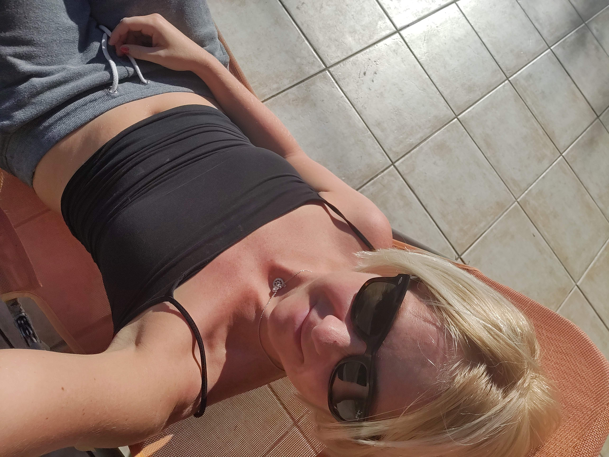

Hi, my name is
Captain B
Enthusiastic problem-solver who enables collaborations by creating win-win solutions.
Helping organisations to grow and create impact in their field. Worked in and with public, privet and third sector in UK for 5 years, Hungary and several other countries in the EU. Most inspiring in a job is when you help others realise that the whole is bigger then the sum of the parts. Worked in the field of:
- Social Enterprise and Innovation
- Higher Education
- Transport Innovation Space
- Public Sector
About page
Life Long Learning is the purpose of my life
Notable achievements
Designed, built and piloted a custom pod racer. 32 BBY Boonta Eve Classic Race Champion
In my spare time at Wald’s Parts junk shop I designed and built a Class III open cockpit Podracer capable of 588 mph top speed. Went on to win the Boonta Eve Classic race in 32 BBY - first ever win by a human. Generated documented company revenue of over 59 wupiupi during the course of my enslavement.
Oversight of DS1 and DS2 Orbital Battle Stations construction projects
During my tenure as a Supreme Imperial Fleet Commander I was in charge of large capital construction projects for the Deep Space Fleet. Performed acceptance testing of the DS1 SuperLaser in 0 BBY by annihilating Alderaan - a terrestrial class planet in the Core Worlds region. Successfully tripled the deep space fire power of the imperial fleet in accordance with the Tarkin Doctrine before losing both projects to run-away photon torpedoes.
My weakness is that I expect more from myself then from anybody else
Experience
Sith Empire Headquarters, Dromund Kaas
Supreme Commander of Imperial Forces, Emperor’s Enforcer
- As the right-hand man to Emperor Sidious, hunted down jedi survivors and enforced the will of the empire;
- Oversaw construction of the first generation Death Star;
- First ever Imperial Supreme Commander;
Wally’s Parts / Toyarian Watto junk shop, Mos Espa, Tatooine
Enslaved Volunteer
- General help and front-desk retail operations at the junk shop, second hand droid parts, mechanical / droid repair services;
- Designed and piloted custom-built Podracer, ran track-side operations for the podracing team;
She, who has the why, can handle any how
Formal training
INSEAD Business School
Emerging Leaders in the Digital Age
- Leading and motivating via digital platforms;
CMI Level 3 Certificate
Chartered Management Institute
- Principles of management and leadership
- Reference: (600/9679/2)
MSc. in Communication and Sociology
Corvinus University of Budapest
- Organisational Sociology;
- Economic Psychology
Bespoke Full Media Training
TNR, Press Association (UK)
- Crisis communication
- Interview technics for all platforms